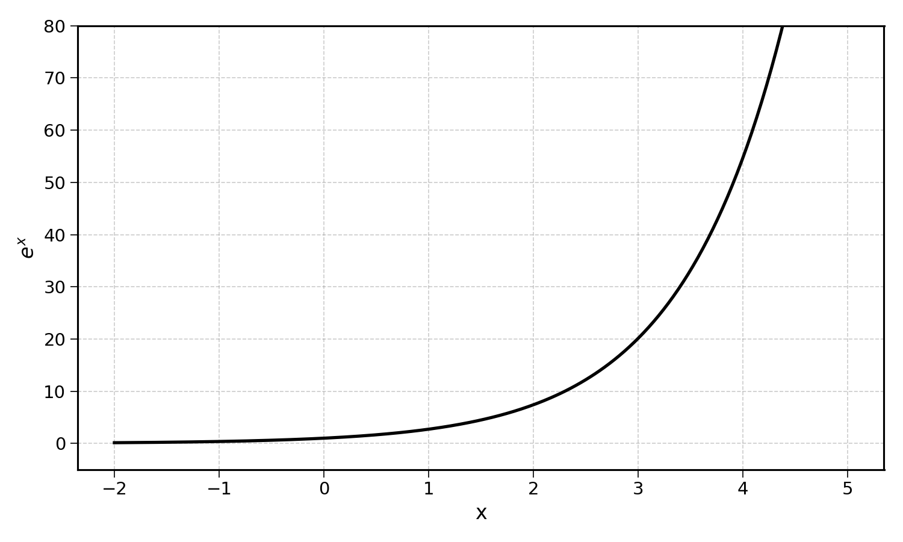
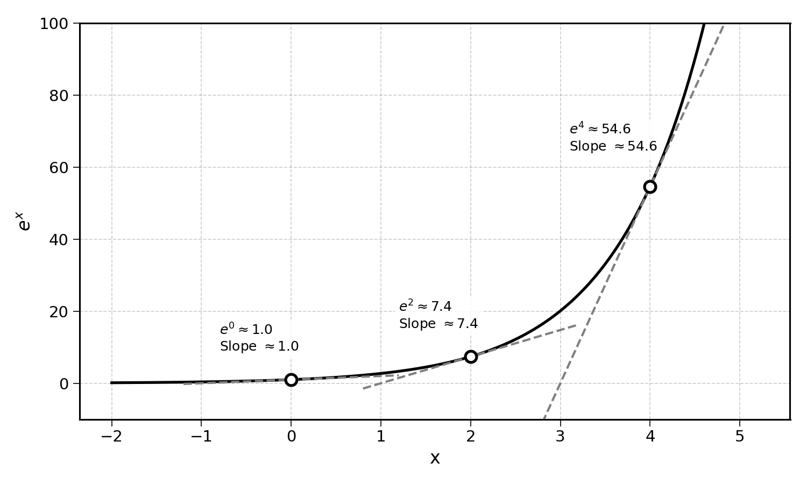
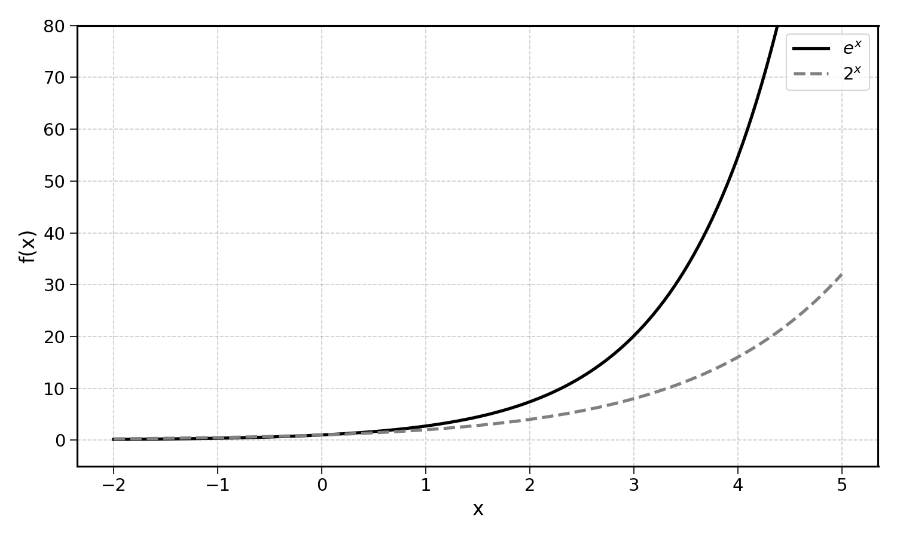
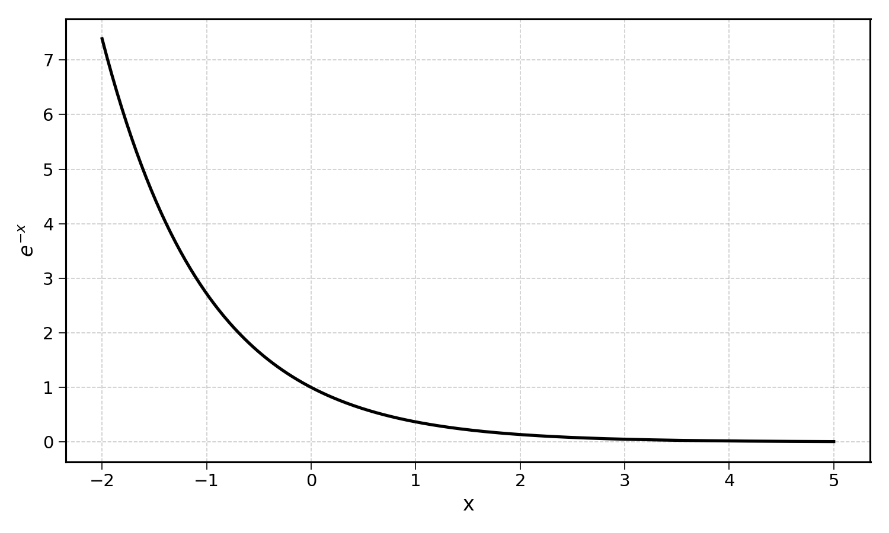
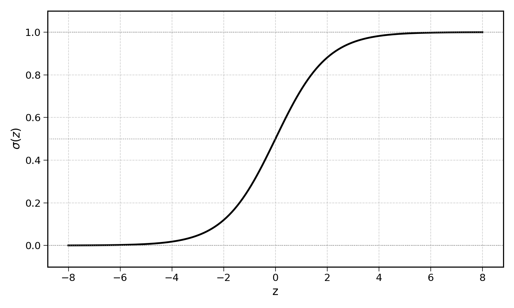
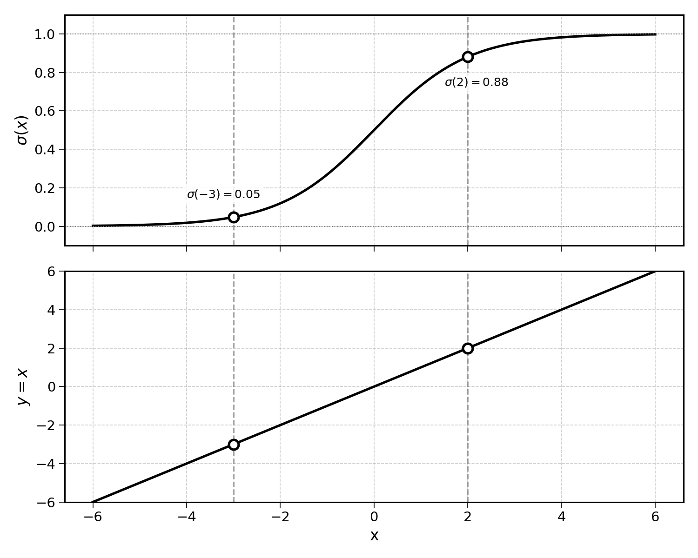
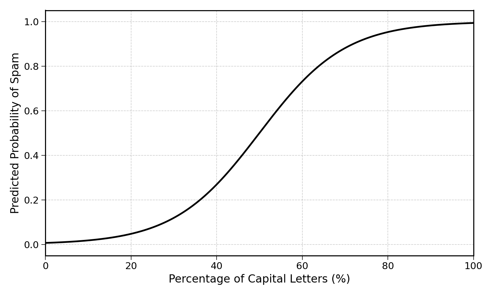

24 The Logistic Regression Formula
The bad news first, the logistic regression function is the following:
\[ f(x) = \frac{1}{1 + e^{-(\text{intercept} + \text{slope} \times x)}} \]
I know this looks complex, but please keep reading. The next few sections will go through this formula step by step. You may recognise:
\[ \text{intercept} + \text{slope} \times x \]
The linear regression formula that we have learnt is already in there. The logistic regression is nothing more than a transformation of the line into an S-shape. A lot of what we learnt in previous chapters will be directly applicable to logistic regression.
We will study the formula step by step, starting with its scariest component, the constant \(e\).
24.1 Exponents and Exponentials
24.1.1 What Are Exponents?
Exponents are noted:
\[ 2^3 \]
Read “two exponent three” or “two to the power three”. The exponent is the number of times the base number should be multiplied by itself. For instance:
\[ 2^3 = 2 \times 2 \times 2 = 8 \]
More generally:
\[ x^n = \underbrace{x \times x \times \cdots \times x}_{n \text{ times}} \]
A number with exponent 1 is equal to itself:
\[ 2^1 = 2, \quad 3^1 = 3 \]
And more generally:
\[ x^1 = x \quad \text{for any } x \]
Note that any number with the exponent 0 is equal to 1:
\[ 2^0 = 3^0 = 4^0 = 1 \]
\[ x^0 = 1 \quad \text{for any } x \]
A negative exponent means dividing instead of multiplying:
\[ 2^{-1} = \frac{1}{2} = 0.5, \quad 2^{-3} = \frac{1}{2^3} = \frac{1}{8} \]
\[ x^{-n} = \frac{1}{x^n} \quad \text{for any } x \neq 0 \]
And a fractional exponent means taking a root. An exponent of \(1/2\) is the square root:
\[ 9^{1/2} = \sqrt{9} = 3, \quad 8^{1/3} = \sqrt[3]{8} = 2 \]
There are also two useful rules for manipulating exponents:
\[ x^a \times x^b = x^{a+b} \]
For example, \(2^3 \times 2^4 = 2^{3+4} = 2^7 = 128\). This is equivalent to:
\[ (2 \times 2 \times 2) \times (2 \times 2 \times 2 \times 2) = 2^7 = 128 \]
Also:
\[ (x^a)^b = x^{a \times b} \]
For example, \((2^3)^4 = 2^{3 \times 4} = 2^{12} = 4096\). This is equivalent to:
\[ 2^3 \times 2^3 \times 2^3 \times 2^3 = 2^{12} = 4096 \]
If you are not familiar with these concepts, I would recommend doing some research before continuing.
24.1.2 e and Continuous Growth
The scariest element of the logistic regression function is the exponential:
\[ e^x \]
If you are seeing this for the first time, this combination of letters may be intimidating. The function:
\[ f(x) = e^x \]
Looks like this:

When you hear of “exponential growth”, this is what it looks like. It is growth that accelerates as \(x\) increases.
The constant \(e\) is a specific number approximately equal to \(2.71828\). The remarkable property of \(e^x\) is that it always equals its own rate of growth.
24.1.3 The Intuition Behind e
24.1.3.1 Compound Interest
Consider a deposit with a 10% annual interest rate. If you deposit 1€ at the beginning of the year, you will have 1.10€ at the end of the year:
\[ 1 \times (1 + 0.1) = 1.10 \text{€} \]
Now what if the same interest rate is applied every month? Each month, you would earn 1/12 of the annual interest rate. After the first month, you will have:
\[ 1 \times \left(1 + \frac{0.1}{12}\right) = 1.00833 \text{€} \]
After the second month:
\[ 1 \times (1+\frac{0.1}{12}) (1+\frac{0.1}{12}) = (1 + \frac{0.1}{12})^2 = 1.0167 \text{€} \]
At the end of the year, you will have:
\[ 1 \times \left(1 + \frac{0.1}{12}\right)^{12} \approx 1.1047 \text{€} \]
This is more than the 1.10€ you would have with annual compounding. The interest earned in the first month starts earning interest in the second month, and so on.
24.1.3.2 Deriving e
Now consider a deposit with a 100% annual interest rate. Compounding it once per year yields:
\[ 1 \times (1 + 1) = 2 \text{€} \]
But what if the same rate is applied more and more frequently, say quarterly, monthly, or weekly? Each time, the interest earned in the earlier period itself starts earning interest. This is compound interest.
| Frequency (\(n\) per year) | Formula | Result |
|---|---|---|
| 1 (yearly) | \((1 + 1)^1\) | 2.000 |
| 4 (quarterly) | \((1 + 1/4)^4\) | 2.441 |
| 12 (monthly) | \((1 + 1/12)^{12}\) | 2.613 |
| 52 (weekly) | \((1 + 1/52)^{52}\) | 2.693 |
Exercise 24.1 Calculate this amount when the 100% interest rate is compounded daily (\(n = 365\)) and hourly (\(n = 8760\)). Show that as \(n\) increases, the result converges to \(2.71828\), the value of \(e\).
Hint: use a calculator.
As \(n\) grows without bound, the formula:
\[ \left(1 + \frac{1}{n}\right)^n \]
converges to \(e \approx 2.71828\). More generally:
\[ e^x = \lim_{n \to \infty} \left(1 + \frac{x}{n}\right)^n \]
This means that \(e^x\) is the effective growth rate of a nominal growth rate \(x\) applied continuously.
\(e^{0.1} = 1.105\) is the effective growth rate of a growth rate of 10% applied continuously; more frequently than each day or even second. \(e^1 = e = 2.718\) is the effective growth rate of a growth rate of 100% applied continuously.
This is why \(e\) appears so often in mathematics and science: any continuously growing or decaying process involves \(e\).
24.1.4 Visualising Continuous Growth
Now, let’s pause for a moment and try to understand what makes \(e^x\) special.
We can plot the \(e^x\) curve and show the tangent line at a few points:

The derivative of \(e^x\) is the slope of its tangent at any given point. At \(x = 0\), we have:
\[ e^0 = 1 \]
And the rate of growth (slope of the tangent) at \(x = 0\) is also \(1\).
At \(x = 2\), we have:
\[ e^2 \approx 7.389 \]
And the rate of increase of the function is also approximately \(7.389\).
This is the same for \(e^4 \approx 54.598\), where the slope of the tangent is also approximately \(54.598\).
The function \(e^x\) increases faster as it increases. It increases exponentially. And most remarkably, its derivative is itself:
\[ f(x) = e^x \implies f'(x) = e^x \]
What is the difference between \(e^x\) and \(2^x\)? Both grow exponentially.

Both curves grow quickly, but only \(e^x\) has its derivative equal to its value at every point. For \(2^x\), the derivative at \(x = 2\) is not equal to \(2^2 = 4\).
Exercise 24.2 The rate of growth of the function \(2^x\) at \(x = 2\) can be approximated numerically:
\[ \frac{2^{2.001} - 2^{2}}{0.001} \]
Compute this value using a calculator. Is the result equal to \(2^2 = 4\)?
Exercise 24.3 Now do the same for \(e^x\) at \(x = 2\):
\[ \frac{e^{2.001} - e^{2}}{0.001} \]
Compute this value using a calculator. Is the result equal to \(e^2 \approx 7.389\)?
24.2 Exponential Growth or Exponential Decay
By symmetry, the constant \(e\) could also be used to model a continuous decay at a constant rate. Instead of using \(e^x\), in which \(x\) is a positive rate of growth, we could simply use \(e^{-x}\), with \(-x\) the rate of decrease.

This will become very relevant in the next section.
24.2.1 Wrapping e Up
First, terrible pun, I am sorry.
More seriously, you do not need to know all of this by heart. The goal of this section was to put some intuition back into what the constant \(e\) stands for. It is the effective growth rate of 100% applied continuously.
In mathematics, \(e\) is a constant that comes back over and over. Every time a continuously growing or decaying process is involved, \(e\) is not far away.
24.3 Back to logistic regression
We can now understand all the components of the formula of the logistic regression:
\[ f(x) = \frac{1}{1 + e^{-(\text{intercept} + \text{slope} \times x)}} \]
This formula is no more than a transformation of a line:
\[ \text{intercept} + \text{slope} \times x \]
To give it its S-shape. This is also called a sigmoid curve, or logistic curve (Verhulst 1845).
24.3.1 The Sigmoid Function
Simplifying the full formula, we can isolate the sigmoid function \(\sigma\):
\[ \sigma(z) = \frac{1}{1 + e^{-z}} \]
Where \(z = \text{intercept} + \text{slope} \times x\) is the output of the linear part.

It is important to remember what functions are. Functions are maps. They map an input to an output. Here, the sigmoid function maps any number \(z\) to a location on this S-curve, a value between 0 and 1.
24.3.2 From Line to Sigmoid

The figure above shows a special case in which the intercept is 0 and the slope is 1. The top plot shows the sigmoid \(\sigma(x)\) and the bottom plot shows the line \(y = x\). Two vertical dashed lines show how the same input \(x\) maps to a value on the line (which can be any number) and a value on the sigmoid (which is always between 0 and 1).
This would work with any line seen in previous chapters. The sigmoid takes the output of a line and maps it to the \([0, 1]\) range. This is exactly what we need to map a linear regression into a probability.
24.3.3 Why Do We Need e?
The constant \(e\) does not make this formula easier to digest.
One of the advantages of the sigmoid curve is that it has saturating effects. Why is this important? In the real world, most relationships are non-linear. A lot of them have decreasing marginal returns.
When classifying emails between “spam” and “non-spam”, once we know that an email has 70% of its content in capital letters (LIKE THIS), we are already quite sure that the message is spam. Whether 72% or 75% of the letters are in capitals should not make a sizeable difference on the predicted probability of the email being spam.
In other words, the effect of an additional percentage point of capital letters should decrease as the percentage increases. The probability curve should flatten as the input gets more extreme.

The exponential can model either continuously growing or continuously decaying systems. In the logistic function, the exponential decay \(e^{-z}\) creates this natural saturation. As \(z\) gets large, \(e^{-z}\) approaches 0 and the sigmoid approaches 1. As \(z\) gets very negative, \(e^{-z}\) becomes very large and the sigmoid approaches 0. In the middle, the transition is smooth and gradual. This is precisely the S-shape we need.
24.4 Final Thoughts
The logistic regression formula may look daunting at first, but it is built from components we already understand:
- A line (\(\text{intercept} + \text{slope} \times x\)), the same formula from linear regression
- The exponential function (\(e^x\)), the base growth rate of continuously growing processes
- The sigmoid function (\(\sigma\)), which maps any number into the \([0, 1]\) range
Together, these components transform a straight line into an S-shaped curve that outputs a probability. This is exactly what we need for binary classification.
24.5 Solutions
Solution 24.1. Exercise 24.1
For daily compounding (\(n = 365\)):
\[ \left(1 + \frac{1}{365}\right)^{365} \approx 2.71457 \]
For hourly compounding (\(n = 8760\)):
\[ \left(1 + \frac{1}{8760}\right)^{8760} \approx 2.71813 \]
As \(n\) increases, the result gets closer to \(e \approx 2.71828\):
| Periods (\(n\)) | Result |
|---|---|
| 4 (quarterly) | 2.4414 |
| 12 (monthly) | 2.6130 |
| 52 (weekly) | 2.6926 |
| 365 (daily) | 2.7146 |
| 8760 (hourly) | 2.7181 |
The value is clearly converging to \(e\).
Solution 24.2. Exercise 24.2
\[ \frac{2^{2.001} - 2^{2}}{0.001} = \frac{4.00277 - 4}{0.001} \approx 2.773 \]
The result is approximately \(2.773\), which is not equal to \(2^2 = 4\).
The derivative of \(2^x\) at \(x = 2\) is approximately \(2.773\), not \(4\). This shows that \(2^x\) does not have the special property where the derivative equals the function value. Only \(e^x\) has this property.
Solution 24.3. Exercise 24.3
\[ \frac{e^{2.001} - e^{2}}{0.001} = \frac{7.39638 - 7.38906}{0.001} \approx 7.393 \]
The result is approximately \(7.393\), which is very close to \(e^2 \approx 7.389\). The small difference comes from the approximation: the smaller the step, the closer the result gets to \(e^2\).
At \(x = 2\), the rate of growth of \(e^x\) is equal to its own value. This is the special property of \(e^x\): its derivative is itself.